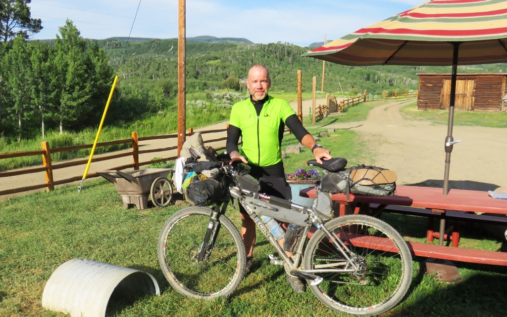
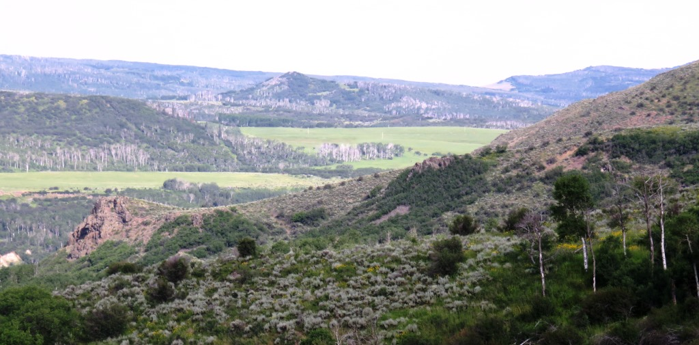
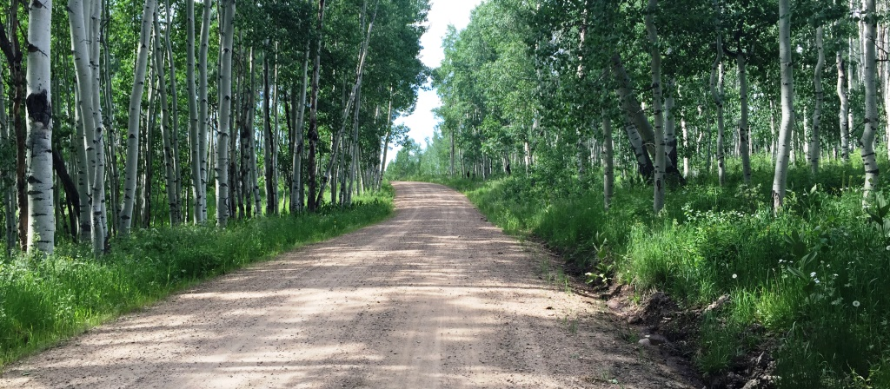
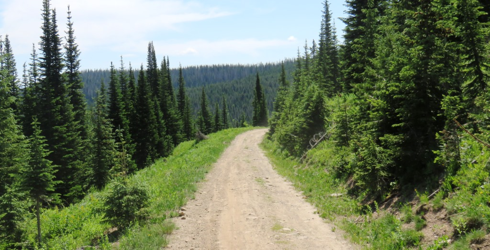
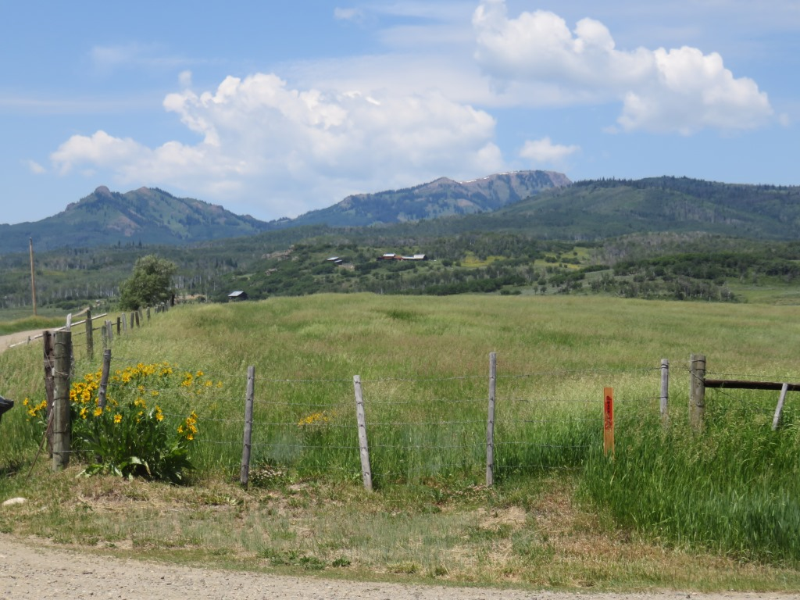
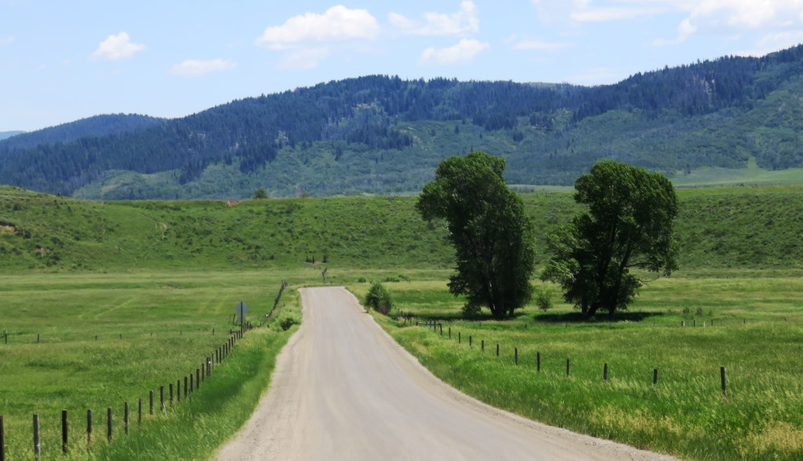
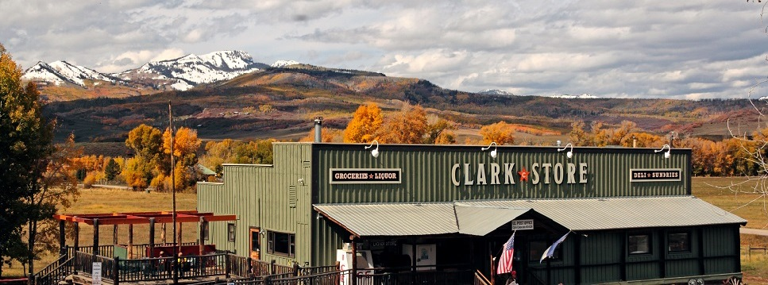

Leaving Brush Mountain
I started this day at 7,600 ft and unsurprisingly went immediately up about 500 feet and then rolled along for about 7 miles before grinding up about 1,500 feet over 3 or four miles. The climb up Hahns Peak Basin took me 1h25m to go 3.8mi. That's an average of 2.7 mi/h. Clearly I was walking.

Ready for the start of my 60th yearIt was a beautiful morning and only 50+ miles to Steamboat Springs

Continuing up the Slater Creek
This was a difficult day for a number of reasons. During my lowest points prior to this I could always convince myself that I couldn't quit before my birthday. So now this hurdle was gone and I still had about 1,100 miles to go. I had traveled 1,560 in 21 days.
This was a nice section with giant fields of yellow wild flowers and then this corridor of aspen trees.

Aspen AlleyStill climbing

Once I crossed over the top of the Slater Creek watershed it was a nice mostly downhill road for the rest of the day into Steamboat Springs.

In this section until past Breckenridge you no longer felt you were as completely alone as in many sections of Wyoming and Montana.

When the road starts to improve you know your getting close.


Stopped for lunch at the Clark StoreAfter the Clark Store we had a downhill bonanza for about 16 miles. I caught Andrew on this section and road the remaining 10 miles into Steamboat with him. We almost caught Rob and Lynn but they saw us coming and beat us to the bike shop. This cost me some time since we all needed bike repairs. I didn't mind since I was done for the day and they were heading on.
I made a quick stop at the Orange Peel bike shop which was right on the edge of town. I rode in along the river and there were lots of people out tubing and generally hanging out. I went to the post office to pick up my resupply box. I left most of the stuff in the box and added some additional things I didn't need and mailed the box to Salinda. I was figuring I would be there in three or four days. I then stopped at Wells Fargo bank and got some more cash. This took longer than expected but the people at the bank were trying really hard to get me some money. I headed back to Orange Peel and stripped down my bike. They ended up replacing the chain and all the gears front and back. They added some sealant to my tires, replaced the brakes and gave the bike the once over. It wasn't cheap but I had no worries for the remainder of the trip. Andrew and Rob's bikes were done hours before mine and they rode on toward Lynx Pass. I was happy to spend the night at the Nordic Inn.
Tuesday, June 30 - 51 miles - Brush Mountain Lodge to Steamboat Springs
See full screen map To go places and do things that I've never done before – that’s what living is all about.Text by Jim O'Brien . Photographs by Jim O'BrienTD on Flickr.